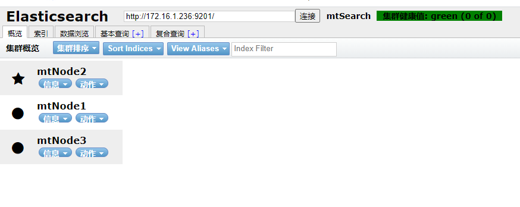
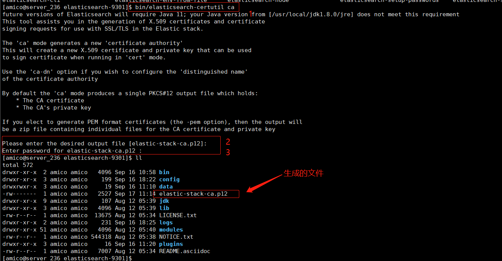
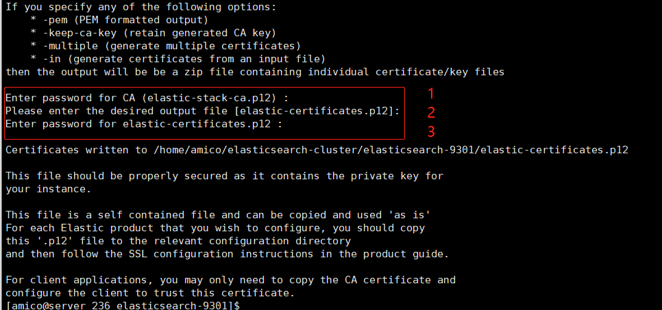
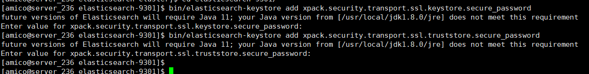
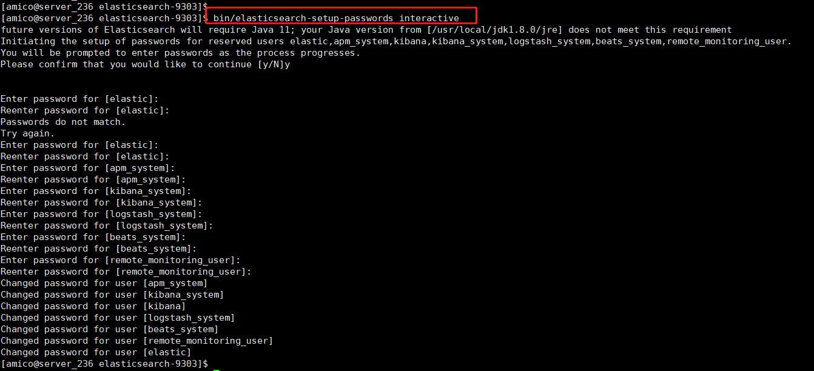
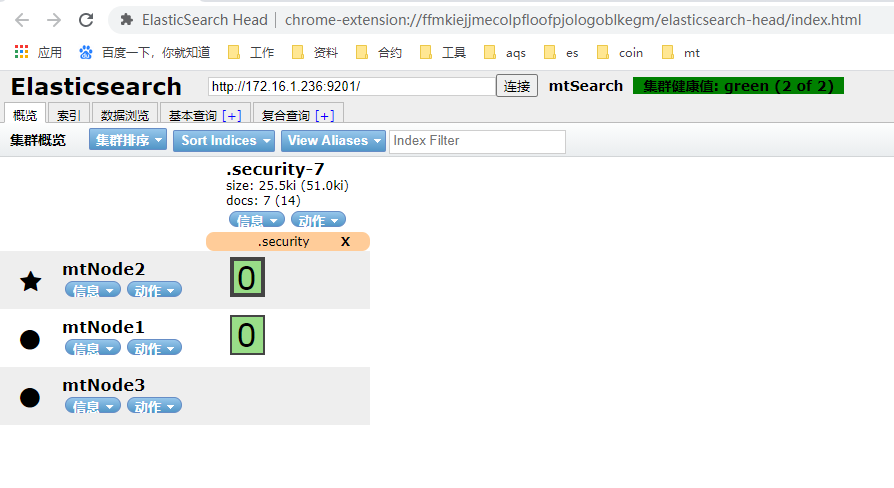
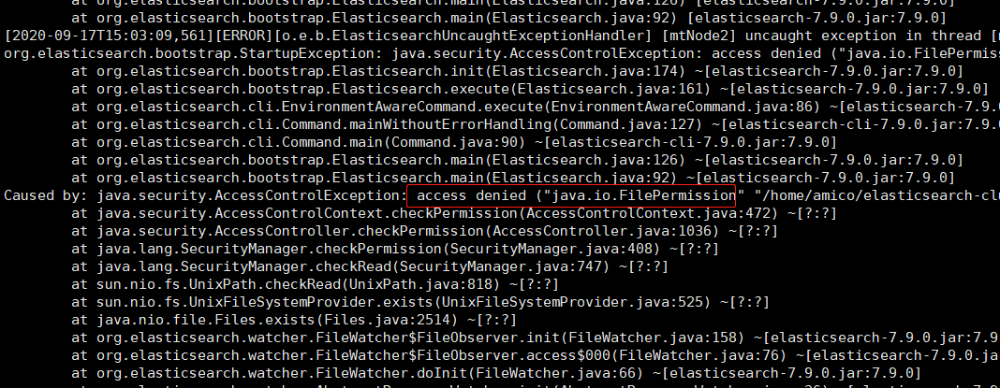

单机版比较简单，试下集群版的，资源有限，本文例子：一台主机以不同端口启动搭建集群。
环境说明：
- Centos7
- Elasticsearch7.9.0
准备搭建3个节点
一、下载ES安装包
去官网下载
- 下载地址：https://www.elastic.co/cn/downloads/elasticsearch
- 历史版本：https://www.elastic.co/cn/downloads/past-releases#elasticsearch
- 7.9.0版本：https://www.elastic.co/cn/downloads/past-releases/elasticsearch-7-9-0
选择7.9.0版本下载Linux x86_64类型的 ，x86_64 与 AARCHS 区别不明白的自己科普一下。
执行Shell命令过程：
# 下载 |
看我复制的文件就知道，我打算启动3个节点，启动端口分别是： 9301、9302、9303
二、修改节点的配置文件
常用配置文件解释
# 集群名称 |
1、各节点配置文件
每个节点的配置都不太相同
9301节点配置
cluster.name: mtSearch |
9302节点配置
cluster.name: mtSearch |
9303节点配置
cluster.name: mtSearch |
都配置完，分别启动3个节点，不出意外即可看到集群连接成功。
/opt/elasticsearch-cluster/elasticsearch-9301/elasticsearch -d |
启动成功，如下图：

如果你之前没安装过，可能会报错：像root用户运行呀，线程不够呀，内存不足呀等等问题
可以看本文最后面的踩坑笔记
集群确实是搞定了，但是没配置账号密码，集群中各节点之间的通信是也没有什么校验措施的，别人随随便便就连上集群。这样在互联网中就相当于裸奔！
三、配置证书
TLS需要X.509证书才能对与之通信的应用程序执行加密和身份验证。为了使节点之间的通信真正安全，必须对证书进行验证。在Elasticsearch集群中验证证书真实性的推荐方法是信任签署证书的证书颁发机构（CA）。这样，将节点添加到群集时，它们只需要使用由同一CA签名的证书，即可自动允许该节点加入群集。
1、生成节点证书
命令 elasticsearch-certutil 简化了生成证书的过程，它负责生成CA并与CA签署证书。
a、创建证书颁发机构CA
随便进入一个节点的bin 目录下执行elasticsearch-certutil 命令即可，如下
# 该命令输出单个文件，默认名称为elastic-stack-ca.p12。此文件是PKCS＃12密钥库 |
执行这个命令之后：
- 会让你输入生成
elastic-stack-ca.p12文件放在哪。（直接回车，放在当前目录） - 回车之后让你输入密码，该密码是让你保护文件和密钥的。如果你以后还要加集群的话，要记得输入的密码。

b、生成证书和私钥
# 此命令生成证书凭证，输出的文件是单个PKCS＃12密钥库，其中包括节点证书，节点密钥和CA证书。 |
执行命令之后需要你操作3次：
- 第一次，输入上面生成CA的密码，没有设置直接回车
- 第二次，生成的文件路径，直接回车
- 第三次，生成这次证书与私钥文件的密码，建议和上面生成CA一致（怕忘记密码，也可以直接回车）
如下图需要输入密码的地方：

命令执行完之后会生成一个elastic-certificates.p12 文件，这个就是各节点通信的凭证
只需要一个节点生成凭证即可。
2、配置证书
复制证书凭证
把证书凭证复制到各个节点一份
# 复制证书凭证到各个节点 |
修改配置文件
在各个节点下的elasticsearch.yml文件添加如下配置
xpack.security.enabled: true |
要注意的是上面的path记得改成对应节点config下的elastic-certificates.p12。
添加密码到密码库
因为之前生成CA 和生成凭证都设置了密码，所以把密码添加到密钥库中
# 执行之后 输入上面设置的密码，回车即可 |

图片上有个警告大概的意思是说：ES未来将使用JDK11,而我现在的环境还是JDK8
之后启动各个节点
elasticsearch-9301/bin/elasticsearch -d |
可以看看日志，不出意外集群启动成功了。随便请求一个节点地址：http://172.16.1.236:9201/
也可以使用elasticsearch-head连接查看，但是需要账户和密码访问
有的同学就要问了，我都没设置账号密码，去哪里看呢？
在安装Elasticsearch时，如果内置用户elastic用户没有密码，它将使用默认的引导密码。引导程序密码是一个临时密码，从随机 keystore.seed 设置派生的会在安装过程中添加到密钥库中。我们压根不知道密码是啥，所以需要为内置用户elastic设置密码。首次设置可以用elasticsearch-setup-passwords命令
Tip:下面的方法，我没试过，我没试过、我没试过，但是文档有，就提一下。
可以使用ES 提供的secure API重新加载为内置用户设置密码:
POST _nodes/reload_secure_settings
{
"secure_settings_password": "yourPassword"
}
3、配置密码
elasticsearch-setup-passwords工具是首次设置内置用户密码的最简单方法。它使用elastic用户的引导程序密码来运行用户管理API请求。
执行命令如下：
bin/elasticsearch-setup-passwords interactive |
它在“互动”模式下提示你输入：elastic，kibana_system，logstash_system，beats_system，apm_system，和remote_monitoring_user用户的密码

只需要在任意节点的bin目录下执行即可，不需要每个节点都执行。
至此ES集群的账号跟密码就设置完成了

我们设置密码之后会有一个名为.security-7的索引文档。
之后可以修改密码：
|
4、踩坑记录
1、安装可能报错的问题：
查看文章链接：ES安装问题集锦
2、修改运行ES的Java环境
在启动ES7.9.0的时候，会提示：future versions of Elasticsearch will require Java 11; your Java version from [/usr/local/jdk1.8.0/jre] does not meet this requirement 也就是说ES未来版本需要JDK11,我目前的环境是JDK8不符合要求。我这个包是自带JDK的，我干脆只把把自动的JDK指定为ES的JDK运行环境：
修改3个节点下的 bin/elasticsearch 文件，在最前面添加如下：
# 这个下面的路径改成你es节点下jdk的路径即可 |
不修改也是可以启动的，但是建议改算了，毕竟官方包都自带了，那肯定是推荐我们使用新版本。
3、elastic-certificates.p12文件位置踩坑
- 因为我只是一台主机，打算是另外把这个证书凭证放在
elasticsearch-cluster下弄个config文件夹保存的，但是呢，不尽人意 - 启动的时候报了个文件权限问题。报错如下

- 可能用
chmod 777 elastic-certificates.p12可以访问,我没试，但是还是建议放在各自的安装目录下。